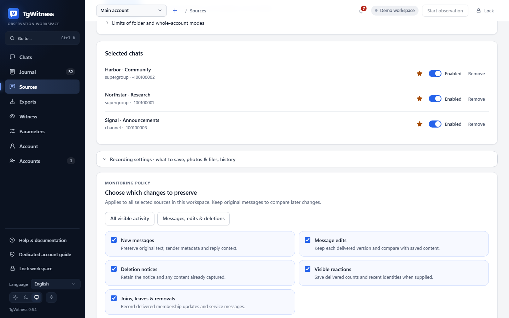
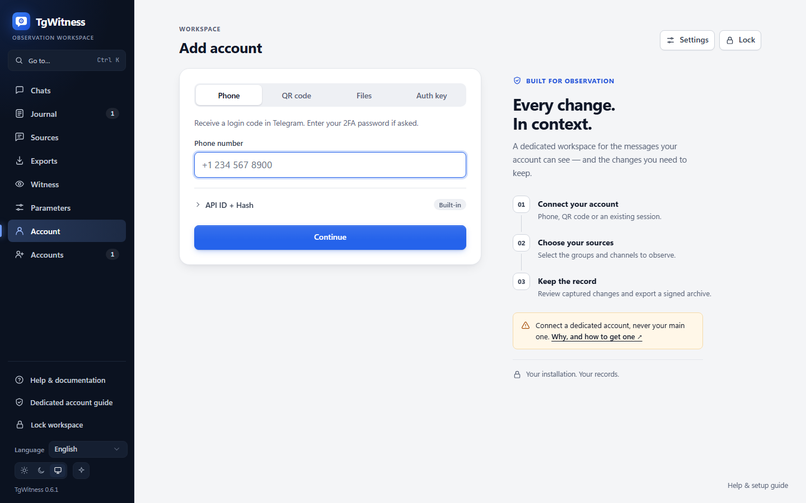

Rujukan / Kumpulkan
Aliran kerja dan operasi
Operasi harian panel: mod, kategori pemantauan, parameter, pemberitahuan, eksport, sandaran dan kapasiti.
Untuk sambungan pertama anda, gunakan akaun dan format sesi. Untuk penjelasan mengenai versi yang disimpan, dasar peristiwa, dan jurang, lihat bagaimana pengumpulan berfungsi. Panduan ini merangkumi operasi harian dan pemulihan.
Aliran kerja operator#
Diagram sebagai teks
- Pilih penyimpanan dan perlindungan kunci → Buka panel dengan tokennya
- Buka panel dengan tokennya → Pilih ruang kerja
- Pilih ruang kerja → Konfigurasikan laluan terus atau proksi
- Konfigurasikan laluan terus atau proksi → Masukkan nombor telefon atau pilih fail / QR
- Masukkan nombor telefon atau pilih fail / QR → Semak identiti akaun dan pilih kumpulan yang boleh diakses
- Semak identiti akaun dan pilih kumpulan yang boleh diakses → Simpan dasar acara dan lampiran, kemudian mulakan pemerhatian
- Simpan dasar acara dan lampiran, kemudian mulakan pemerhatian → Memantau ralat, capaian, barisan dan cakera
- Memantau ralat, capaian, barisan dan cakera → Menyimpan titik pemeriksaan bebas
- Menyimpan titik pemeriksaan bebas → Eksport dan sahkan bahan
Autorisasi, sambungan pengangkutan, akses ke kumpulan dan kelengkapan penghantaran adalah sifat yang berbeza. Status sambungan hijau tidak bermakna semua peristiwa telah dirakam.
Berkongsi kerja tanpa berkongsi kunci utama#
Akses Terbuka untuk memberi pemeriksa atau penganalisis token mereka sendiri. Pilih akaun dan sembang yang boleh mereka buka, kemudian benarkan tontonan, eksport atau tindakan operasi. Seorang pengendali yang memulakan/menhentikan pengumpulan memerlukan akses ke seluruh ruang kerja; seorang penilai boleh dihadkan kepada satu sembang sahaja. Had sesi, tamat tempoh dan peraturan IP adalah berasingan daripada kebenaran akaun Telegram. Lihat akses dan kebenaran.
Gunakan sesi Terbuka untuk menamatkan sambungan atau mencabut akses untuk menamatkan semua sesinya. Konsol pentadbir menggabungkan aktiviti proses semasa merentasi ruang kerja. Penutupan sesi membiarkan pengumpulan terus berjalan.
Mod masa larian#
| Mod | Tindakan | Tingkah laku |
|---|---|---|
| Demo | scripts\Demo.cmd atau --demo |
Data sintetik; sambungan akaun sebenar dilumpuhkan |
| Perhatian | Mulakan pemerhatian | Merekod kemas kini yang dihantar untuk sumber terpilih |
| Siaran sejarah | Sumber → potret sejarah | Sehingga 500 mesej semasa; tiada pembinaan semula semua perubahan lalu |
| Pause | Jeda pemerhatian | Hentikan pengumpulan sambil mengekalkan data dan kerja yang sedang menunggu giliran |
| Semakan/penyerahan | Eksport | ZIP, JSONL/CSV/HTML, checkpoint, resit proses dan permintaan cap masa |
| Beberapa akaun | Ruang kerja atau butang teratas + | Sebarang bilangan ruang kerja berasingan dalam satu proses |
Akses demo tempatan dibuka secara automatik tanpa memasukkan token secara manual. Ia menggunakan keupayaan sepanjang hayat proses yang sah hanya untuk akses loopback langsung ke demo sintetik terasing; token panel utama tidak didedahkan. Ruang kerja sebenar dan akses demo jauh atau proksi mengekalkan pengesahan token. Kemasukan demo tidak memberikan sebarang kebenaran Telegram.
Kategori pemantauan#

Dalam Sumber → Tetapan Rakaman → Pilih perubahan yang ingin disimpan, pilih mesej baru, suntingan, notis pemadaman, kemas kini reaksi dan acara keahlian secara berasingan. Lalai mengekalkan semua kategori. Mesej, Suntingan & Pemadaman mengekalkan konteks asal sambil menyahdayakan kemas kini reaksi/ahli secara berasingan. Semua aktiviti yang boleh dilihat memulihkan kesemuanya lima. Tetapan pra-tetap menukar borang; tekan Simpan tetapan pemantauan untuk menerapkan.
Dasar yang disimpan terpakai kepada semua sumber terpilih dalam ruang kerja tersebut. Ruang kerja lain mengekalkan tetapan mereka sendiri. Setiap perubahan sebenar merekodkan nilai sebelum/selepas yang disahkan; dasar semasa juga disertakan dalam resit proses dan rekod permulaan pemerhatian. Mematikan kategori tidak memadam pemerhatian terdahulu. Mengaktifkan semula tidak memulihkan perubahan yang terlepas. Tiada keutamaan kategori mengikut kumpulan dalam versi ini.
Teruskan membolehkan mesej baharu apabila kandungan terdahulu penting: notis pemadaman tidak dapat memulihkan teks yang tidak pernah dirakam. Rekod operasi/liputan dan acara perkhidmatan kumpulan lain sentiasa disimpan. Snepadang sejarah eksplisit adalah berasingan daripada pemilihan kategori langsung dan mungkin termasuk mesej perkhidmatan. Suis ini tidak menyembunyikan metadata tindak balas/ahli yang tertanam dalam objek Telegram yang dirakam.
Snapshot sejarah mungkin menyusun lampiran dalam barisan sementara dihentikan. Mulakan pemerhatian untuk memprosesnya. Disusun dalam barisan tidak bermakna dimuat turun. Fail asal yang tidak tersedia tidak digantikan dengan versi suntingan yang lebih baru; keputusan direkodkan secara berasingan.
Kunci membersihkan akses pelayar dan medan rahsia tetapi membiarkan pengumpulan terus berjalan. Menutup tab juga membiarkan proses terus berjalan. Menhentikan proses atau perkhidmatan Python menhentikan pengumpulan tanpa mengira keadaan pelayar.
Memadam ruang kerja tambahan menghentikan pengumpulnya dan memadam data tempatan. Jika ralat fail terkunci atau sistem fail mengganggu pemadaman, panel akan melaporkan kegagalan dan mengekalkan ruang kerja tersebut sebagai tidak tersedia (DeletionPending). Tutup program yang memegang failnya dan cuba semula memadam. Memulakan semula TgWitness membiarkan ruang kerja itu terhenti dan tidak mencipta semula jurnal atau kunci yang sebahagiannya telah dipadamkan. Pemadaman yang berjaya hanya direkodkan selepas direktori tersebut dipadamkan; salinan yang dieksport atau disandarkan secara berasingan kekal di bawah dasar pengekalan mereka sendiri.
Pemberitahuan#
Sumber Terbuka → Pemberitahuan → Amaran dan ringkasan harian. TgWitness menggunakan Apprise untuk menghantar amaran ke Matrix, Telegram, Discord, Slack, ntfy, e-mel dan perkhidmatan lain yang disokong. Anda boleh menambah beberapa destinasi ke satu ruang kerja.
- Masukkan satu URL destinasi Apprise setiap baris. Gunakan katalog perkhidmatan dan format URL untuk perkhidmatan anda.
- Hidupkan penghantaran pemberitahuan, kemudian pilih amaran masalah, perubahan dalam sembang yang diperhatikan dan ringkasan harian. Jam ringkasan menggunakan waktu pelayan.
- Aktifkan Sertakan petikan pendek jika anda mahu teks yang disimpan daripada mesej yang dipadam dan disunting dalam pemberitahuan.
- Tekan Simpan pemberitahuan, kemudian Hantar ujian untuk memeriksa penghantaran.
Untuk penerima anda sendiri, gunakan webhook JSON Apprise.
Sebagai contoh, jsons://notify.example.org/tgwitness menghantar JSON melalui HTTPS ke hujung tersebut.
Ini adalah contoh rekaan; gantikan dengan destinasi anda sendiri.
Destinasi dan tetapan terpakai pada ruang kerja yang dipilih. Pemberitahuan perubahan merangkumi sumber yang diperhatikannya, termasuk sembang yang baru ditambah. Loceng di bar atas juga menyenaraikan masalah dan perubahan sembang terkini.
Dalam demo, kawalan pemberitahuan boleh dilihat tetapi penghantaran dilumpuhkan. Konfigurasikan penghantaran dalam ruang kerja sebenar. Pemberitahuan menggunakan laluan Direct, SOCKS5 atau HTTP ruang kerja tersebut; MTProxy tidak dapat membawanya. Destinasi bukan HTTP seperti SMTP memerlukan laluan terus.
Susun atur panel#

Jurnal memaparkan pemerhatian, carian dan penapis. Suntingan membuka versi yang dirakam; pembuangan membuka kandungan sebelumnya jika tersedia. Atribusi yang tidak diketahui kekal dinyatakan dengan jelas. Bilangan tersedia di bawah Gambaran Keseluruhan; butiran pemerolehan kekal dalam panduan tempatan.
Sumber mengandungi skop pemerhatian (perbualan terpilih, folder Telegram atau keseluruhan akaun), perbualan boleh diakses dari semua jenis, sumber terpilih dengan bintang keutamaan, tetapan lampiran dan semakan semula serta potret sejarah. Sumber peribadi dipilih melalui dialog/ID tanpa pautan awam. Status akses menerangkan pemeriksaan terkini, bukan kebenaran kekal.
Perbualan → Orang memaparkan semua orang yang mempunyai mesej disimpan; dengan profil orang diaktifkan untuk perbualan, satu klik membuka profil orang tersebut dengan pautan ke rekod jurnal.
Witness mencipta token saksi baca sahaja, memaparkan bila setiap saksi terakhir diperiksa dan memberikan arahan serta pilihan untuk menjalankan satu (saksi bebas).
Parameter memegang setiap had dan kelajuan ruang kerja yang tidak berada di halaman lain:
berapa banyak dialog dibaca, seberapa kerap senarai sembang dibaca semula, selang degupan jantung dan pemeriksaan semula, tampanan permulaan, bagaimana pemeriksaan semula menyebarkan permintaan mereka (kelewatan pertama, sembang per
pass, jeda antara sembang, mesej yang dipulihkan dan diminta semula), rizab cakera, had masa dan percubaan semula muat turun, apa yang dicari dalam profil orang (termasuk ungkapan biasa anda sendiri), saiz dan kelajuan pemberitahuan, had imej skrin, ZIP dan muat turun pelayar, serta had masa dan percubaan semula klien Telegram. Setiap medan menunjukkan julat dan lalai; medan yang diubah diletakkan tanda dan boleh dipulihkan satu persatu atau semuanya sekaligus. Setiap perubahan direkodkan sebagai parameters.changed dengan nilai sebelum dan selepas, dan rekod permulaan pemerhatian menamakan nilai yang berkuat kuasa. Nilai terpakai dari penggunaan seterusnya; had masa dan percubaan semula klien berkuat kuasa pada sambungan seterusnya. Jarak semakan semula, jenis dan saiz lampiran, bukti dan jarak salinan luar kekal di halaman masing-masing dan mengambil mana-mana nilai dalam julat mereka, bukan hanya tetapan pra-tetap.
Loceng pada bar atas menyenaraikan masalah dan perubahan terkini dalam sembang yang diperhatikan; sembang yang belum dibaca dikira sehingga ditandakan sebagai telah dibaca. Perubahan dikumpulkan mengikut sembang dan jam ("12 dipadam, 1 disunting, 0 tidak ditemui"), dan masalah seperti log keluar atau cakera penuh kekal dalam senarai tidak kira betapa sibuknya sembang tersebut.
Akaun bermula pada medan nombor telefon. Sambungan meneruskan terus ke kemasukan kod, meminta butiran API hanya apabila tiada. Import QR dan fail adalah tab alternatif. Butiran API yang disimpan hanya digunakan semula dalam ruang kerja mereka sendiri. Skrin kemasukan tidak mempunyai bar sisi, statistik, atau perenggan tetapan. Ikon Tetapan membuka kawalan API, proksi, storan, dan akaun tambahan. Pemasangan baharu bermula di sini; akaun yang disambungkan tanpa sebarang sumber dipilih bermula pada Pilih sembang. Menukar laluan memerlukan pemerhatian seketika dan membatalkan log masuk yang belum selesai. Jurnal sedia ada tidak boleh diikat semula secara senyap kepada akaun Telegram yang berbeza.
Pembatasan eksport memeriksa integriti jurnal dan menghasilkan fail boleh dibawa. ID ruang kerjanya boleh diberikan kepada CLI muat turun. Setiap eksport menetapkan prefiks jurnal penuh; peristiwa kemudian dimasukkan ke dalam eksport seterusnya. Penapis carian tidak mengubah skop pakej. Maklumat terperinci mengenai penandatanganan dan liputan terdapat di bawah Pengesahan & had.
Panel melaporkan status pengumpul, media yang beratur/gagal, media tertunggak tertua, ruang cakera kosong, jeda permintaan dan sumber yang aksesnya belum disahkan di bawah kesihatan Pengumpul. Butiran ini dilipat pada mulanya dan disembunyikan di Akaun. Kad tetapan menunjukkan langkah seterusnya: sambungkan akaun, pilih sumber, atau mulakan pemerhatian. Senarai akaun adalah tangkapan masa memuat; ruang kerja terpilih dikemas kini secara berkala. Ini bukan pemantau SLA berbilang proses.
Antaramuka pengguna menggunakan aset tempatan dan pemaparan teks untuk kandungan sumber. Susun atur desktop dan sempit Chromium telah diuji. Ini bukan pensijilan kebolehcapaian yang lengkap; penilaian kebolehgunaan pembaca skrin dan manusia kekal sebagai kerja berasingan.
Persekitaran penyebaran#
| Persekitaran | Pemasangan | Status pengesahan |
|---|---|---|
| PC/pelayan Windows | Python 3.11+, skrip\Setup.cmd/Start.cmd, direktori data peribadi | Diperiksa secara tempatan pada Windows/Python 3.12 |
| Pelayan Linux/VPS | venv Python, pengguna perkhidmatan khusus, HTTPS/SSH | Contoh kod, CI dan systemd disediakan; tidak dijalankan pada hos ini |
| macOS | venv Python, proses latar depan atau ejen pengguna | Contoh launchd disediakan; pemeriksaan pemasangan berasingan diperlukan |
| Docker/Compose | Jumlah kekal, satu pekerja | Definisi dan pemeriksaan masa larian CI disediakan; Docker tidak tersedia secara tempatan |
| Pelayar telefon | Sambungkan ke panel terlindung pada pelayan yang sedang berjalan | Susun atur sempit Chromium telah diuji; pengumpul tidak berjalan pada iOS/Android |
Portabiliti bermaksud tiada perkhidmatan awan wajib atau binaan frontend. Setiap sasaran masih memerlukan kebergantungan Python/kripto yang serasi, cakera tempatan dan akses rangkaian. Lihat DEPLOYMENT.md dan templat perkhidmatan.
Ruang kerja berkongsi CPU, memori dan gelung acara. Untuk pengasingan proses, gunakan instans berasingan, port, direktori data dan kebenaran akaun. Tiada panel bersatu merentasi instans yang berasingan. Jangan sekali-kali menunjuk beberapa pekerja kepada satu pangkalan data.
Semakan dan eksport permulaan#
Jalankan python start.py --check sebelum memulakan persekitaran yang telah disediakan. Tambah --json untuk semakan yang boleh dibaca oleh mesin atau jalankan --data-dir, --host dan --port yang dimaksudkan. Perintah ini menyemak prasyarat tanpa log masuk Telegram atau mencipta jurnal. Ia tidak mengesahkan jurnal atau membuktikan kesediaan tangkapan; pengesahan jurnal dijalankan semasa permulaan aplikasi. Port yang sedang digunakan mungkin sekadar instans yang sedia ada.
Pelayar yang menyokong API Akses Sistem Fail menyimpan eksport melalui aliran yang boleh ditulis. Pelayar lain menampung sekurang-kurangnya 128 MiB. Gunakan CLI penstriman untuk eksport bersaiz lebih besar atau pelayar tanpa penstriman fail:
python -m tgwitness.download --token-file data/live/panel-token.txt --out evidence.zipTambah --profile ID
daripada Eksport untuk ruang kerja anak. Gunakan --url https://server
untuk capaian jauh. HTTP biasa hanya diterima untuk destinasi loopback. Token dibaca daripada fail dan dihantar dalam header, bukan dicetak atau dimasukkan ke dalam URL. Pengalihan ditolak. Destinasi sedia ada tidak akan ditimpa. Pemindahan yang gagal akan memadam fail bahagian sementara mereka. SHA-256 yang dilaporkan adalah checksum pemindahan; sahkan ZIP yang ditandatangani secara berasingan dengan cap jari/titik pemeriksaan yang dipercayai.
Sandaran, pemulihan dan gangguan#
- Jeda pemerhatian dan hentikan proses dengan kemas.
- Salin keseluruhan direktori data: pangkalan data, WAL/SHM jika ada, media,
credentials.enc,signing.enc,network.enc, kunci/metadata peti besi, token, titik pemeriksaan dan setiap direktoriprofiles/. - Untuk mod kunci luaran, simpan kunci induk secara berasingan dan kekalkan setiap
vault.external.json. Mencipta kunci baru tidak dapat memulihkan rahsia lama. - Pulihkan semasa destinasi dihentikan; konfigurasi kunci asal, hadkan akses, dan sahkan integriti sebelum disambung semula.
- Rakam masa henti dan keputusan pengesahan. Sisipan sejarah tidak dapat membuktikan bahawa tiada pemadaman berlaku semasa gangguan.
ZIP bukti mengecualikan sesi/kunci peribadi dan bukan sandaran perkhidmatan penuh. Empat perkara dilindungi secara berbeza:
| Apa | Perlindungan |
|---|---|
| Eksport fail tanpa kata laluan (laluan lalai) | Tidak disulitkan. Ditandatangani, jadi perubahan boleh dikesan, tetapi sesiapa yang memegang fail tersebut boleh membacanya |
| Eksport fail dengan kata laluan | Jika anda menetapkan kata laluan, eksport siap tidak berubah dimasukkan ke dalam fail ZIP WinZip AES-256 yang boleh dibuka oleh 7-Zip dan WinRAR; kata laluan tidak disimpan (penanganan bukti) |
| Pangkalan data jurnal dan lampiran yang disimpan pada cakera | Tidak disulitkan oleh TgWitness; gunakan cakera atau volum yang disulitkan |
| Sesi Telegram dan kunci tandatangan | Disulitkan dalam direktori data (credentials.enc, signing.enc, network.enc) |
Simpanan sandaran perkhidmatan penuh ialah direktori data yang dihentikan seperti yang diterangkan di atas, bukan eksport.
Gunakan storan terlindung dan mekanisme pemindahan yang disengajakan untuk kedua-duanya. Eksport pelayan sementara disimpan dalam
temporary-exports/ setiap ruang kerja; respons yang telah selesai dibersihkan, dan fail eksport yang terganggu dipadamkan pada permulaan seterusnya sementara kunci instans ruang kerja tersebut dipegang.
Acara pemulihan sambungan tidak menjamin pemulihan perubahan pertengahan. Tugas media berterusan dan kedudukan kemas kini Telegram kekal selepas permulaan semula; lihat format bukti.
Kapasiti dan penyimpanan#
Had lalai, semuanya boleh diubah di bawah Parameter: 1,000 dialog pertama, 500 mesej setiap snapshot, 4 GiB kandungan ZIP yang ditandatangani tanpa mampatan (arkib lebih besar memerlukan
verify.py --max-gib N) dan sandaran pelayar 128 MiB. Lampiran mengambil 1–2,000 MiB setiap jenis di bawah Sumber → Lampiran. CLI muat turun secara lalai menetapkan 5 GiB dipindahkan. Ruang cakera yang tersedia boleh menjadi had yang lebih rendah. Cadangkan ruang untuk jurnal, media, WAL, eksport sementara dan sandaran.
Pengeksportan menggunakan volum data dan bukannya /tmp 512 MiB daripada Compose.
Ukur bilangan peristiwa/saat, umur barisan, bait media dan kelewatan cakera, bukannya hanya mengira kumpulan. Penanda aras tempatan sintetik tidak menjamin penghantaran Telegram. Tiada pemadaman pengekalan automatik. Mengalihkan ekor jurnal membatalkan hubungannya dengan checkpoint yang disimpan.
Semakan semula keutamaan sudah wujud: sumber yang diberi bintang disemak semula setiap 15 minit secara lalai, manakala yang lain setiap 6 jam (lihat peringkat semakan semula). Eksport yang dilindungi kata laluan wujud seperti yang diterangkan di atas. Penerimaan Telegram/proksi secara langsung, main semula berterusan, log pentadbir dan pengundian reaksi, pekerja terasing, penyulitan jurnal dan media tempatan oleh TgWitness itu sendiri dan semakan bebas kekal sebagai kerja berasingan. Akses terhad didokumenkan dalam akses dan kebenaran. Lihat READINESS.md, LIVE_ACCEPTANCE.md dan VERIFICATION.md.